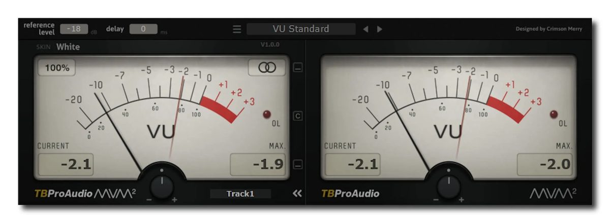
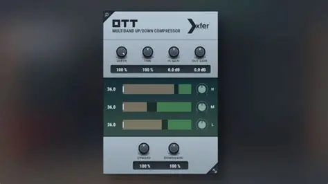
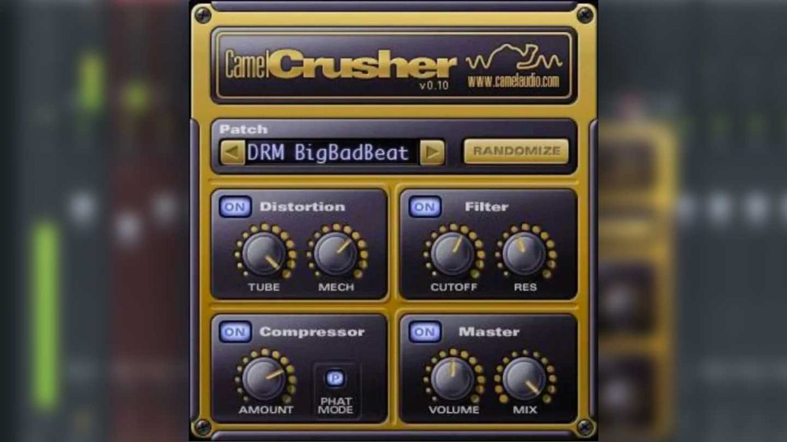
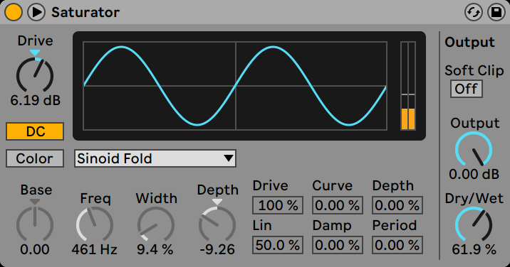
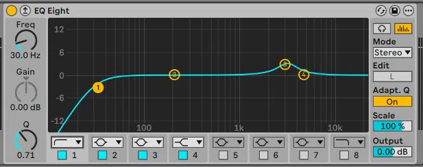
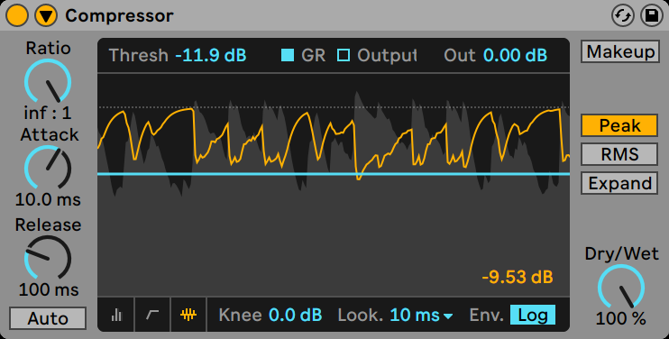
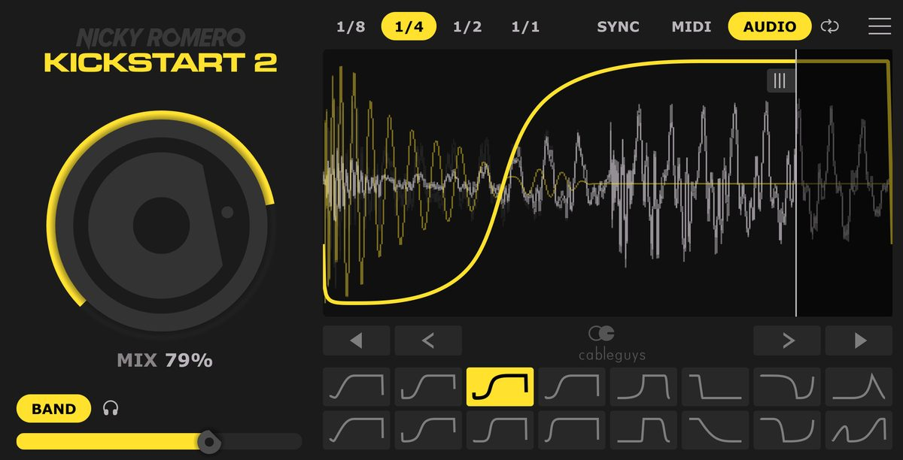
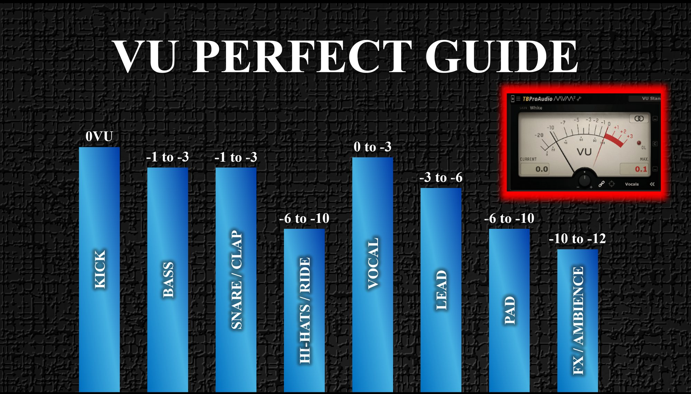
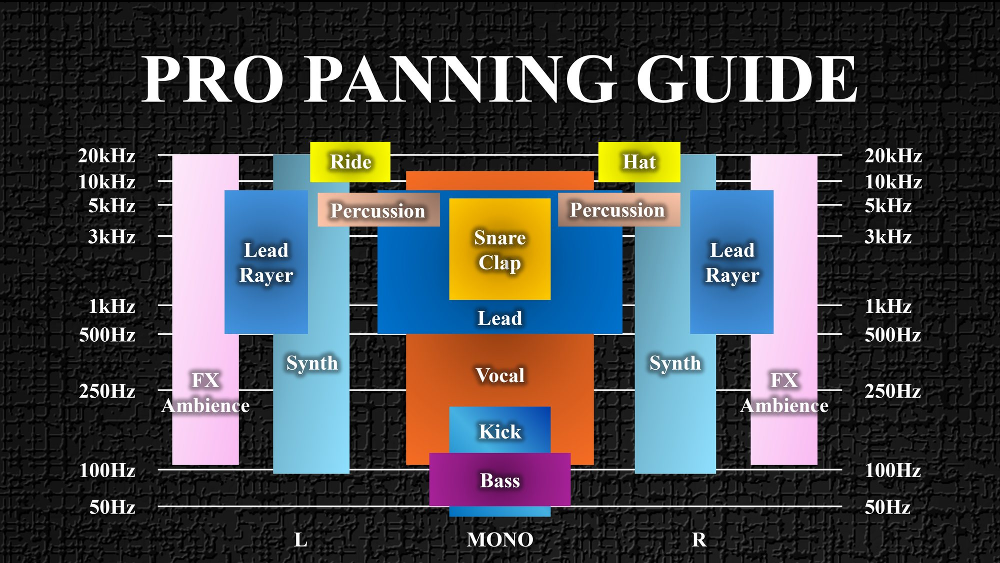

STEP1、お疲れ様でした。
レファレンスが決まり、目指す曲の方向性が固まった状態でここに来ています。 それだけで、多くのDTMerより一歩先にいます。
STEP2では、その方向性に合ったローエンド（低域の土台）を設計します。
ここでやることはシンプルです。 キック・ トップベース・ サブベース の3つを「1つの楽器」として設計すること。
音を派手にすることでも、EQで太くすることでもありません。役割・順番・基準を固定すること。それだけです。
この認識を持てるかどうかで、この先の完成率は大きく変わります。
STEP2 の全体像
6つのステップで「1本のローエンド」を完成させる
STEP2は以下の6つのステップで構成されています。1本の流れです。順番通りに進めてください。
3つのフェーズに分かれています
ローエンドの基準点を作る
キックの構造を理解し、1つに決め、4小節に固定する。
輪郭と太さを設計する
トップベースで輪郭を、サブベースで太さを作る。
3つを1本に統合する
LOW BUSにまとめ、1本のローエンドとして仕上げる。
この6つは別々の作業ではありません。 → 1本の流れです。
順番通りに進めるだけで、ローエンドが完成します。
STEP2 を終えると、こうなる
このSTEPが完了した時点で、こうなります。
- キックとベースが喧嘩しない
- ローエンドがどの環境でも安定する
- 低域の判断に迷わなくなる
- ミックス全体が一気に楽になる
「音が良くなる」よりも ── 「迷いが消える」
ここを乗り越えた人は、ドラム・メロディ・アレンジが驚くほどスムーズに進みます。
未公開曲で学ぶ、
プロのミキシングの全工程
「トリケラテクノの完全未公開曲のミキシングの裏側」をフルバージョン＆ノーカットで全5回に分けて公開しています。
これを見れば、なんとなくでやっていたミキシングから抜け出し、プロと同じ“判断基準”で音を仕上げることができるようになります。
1 / 5 ── キック＆ベース編（28分）。この動画を見て、STEP2でどこまで制作を進めることができるのか、まずは確認してください。
STEP2 で使うプラグイン
DAW付属品＋無料プラグインで完結します。
必須（すべて無料）

無料 Metering ── 音量の基準を見る mvMeter2 VU基準で音量を計測する。トラック間のバランスを揃える物差しになる。 tbproaudio.de
無料 Multiband ── 定番のアップ/ダウンコンプ OTT（Xfer Records） マルチバンドのアップ/ダウンコンプレッサー。ダンスミュージックでは定番中の定番。 xferrecords.com
無料 Saturator ── 歪みとフィルター CamelCrusher macOS / Windows 対応。歪みとダイナミックフィルターを備えた定番の無料サチュレーター。 camelcrusher.comDAW付属でOK

サチュレーター
── Saturator
倍音を足して音に密度を出す。Drive と Dry/Wet だけでも十分効く。
Ableton Live 付属
EQ
── EQ Eight
不要な帯域を削る。STEP2ではサブベースの150Hzカットなどで使う。
Ableton Live / FL Studio / Studio One / Bitwig Studio、いずれも付属品でOK
コンプレッサー
── Compressor
音量のばらつきを整える。STEP2-6のLOW BUSでGlueコンプとして使う。
DAW付属のもので問題なし強く推奨（有料・約2,500円）

有料 ／ 約2,500円 Sidechain ── 唯一の有料推奨 Kickstart 2── サイドチェイン専用プラグイン Nicky Romero & Cableguys。ゼロ操作でプロ品質のサイドチェインが作れる定番ツール。 www.kickstart-plugin.com
- アタックが合わない
- 戻りが遅い・速すぎる
- 曲によってバラつく
これらの問題が必ず起きます。
Kickstart 2 Showcase ── Nicky Romero & Cableguys。実際の挙動はこの動画が一番わかりやすい。
Kickstart 2 は、その問題をゼロ操作で回避できます。
開発には、Ultra や Tomorrowland などの世界的なダンスミュージックフェスのメインステージでヘッドライナーを務める Nicky Romero が携わっており、David Guetta をはじめ世界トップクラスのプロデューサーも実際に使っている定番ツールです。
「考えなくていい・迷わなくていい」という時短と安定感は、価格以上の価値があります。
STEP2 共通の基準
このロードマップでは、全STEPを通じて以下の共通ルールで進みます。
VUガイドVU Guide

キック 0VU を基準に、ベース −1〜−3、ボーカル 0〜−3、FX/アンビエンス −10〜−12 まで。mvMeter2 で測りながら合わせる。原寸で開く
パン振りガイドPan Guide

縦軸が周波数、横軸が L / MONO / R。キックとベースは常にセンター、100Hz以下はMONO。どの音をどこに置くかが1枚でわかる。原寸で開く
詳細は各STEPで解説しますが、「基準が用意されている」ということを先に知っておいてください。
迷ったときに戻ってくる地図です。
STEP2 でやらなくていいこと
ここは重要なので先に伝えます。
- この段階で音作りにこだわらない
- EQや歪みで太さを作ろうとしない
- ローエンドを派手にしようとしない
STEP2は音を良くするSTEPではありません。
ローエンドの役割・順番・基準を固定するSTEPです。
あなたにも必ずできます
正直に言います。STEP2は少し長いです。6つのステップがあり、慣れない概念も出てきます。
でも、安心してください。
このSTEPでやることは毎回シンプルで、1つずつ順番にこなすだけです。 ここまで来られたあなたなら、必ず完走できます。
詰まったら、すぐにサポートラインに連絡してください。一人で抱え込まなくていい。 それがこのロードマップの強みです。
では、始めましょう。
キックの構造と
ジャンルを理解する
次は【STEP2-1】キックの構造とジャンルを理解するところから始めます。
ローエンドの設計は、最初の1音で決まります。
押すとHUBの進捗％に反映されます。